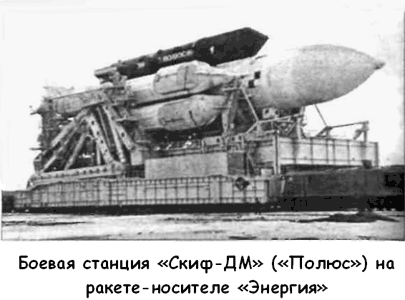

Боевой орбитальный комплекс «Скиф-ДМ»
Разработка боевой лазерной станции «Скиф», предназначенной для поражения низкоорбитальных космических объектов бортовым лазерным комплексом, началась в НПО «Энергия», но в связи с большой загруженностью объединения с 1981 года тему «Скиф» передали в КБ «Салют». 18 августа 1983 года Генеральный секретарь ЦК КПСС Юрий Андропов сделал заявление о том, что СССР в одностороннем порядке прекращает испытания комплекса противокосмической обороны. Однако с объявлением в США программы «СОИ» работы над «Скифом» продолжились.
Для испытаний лазерной боевой станции был спроектирован динамический аналог «Скиф-Д». В дальнейшем для проведения испытательного запуска ракеты-носителя «Энергия» в срочном порядке был создан макетный образец станции «Скиф-ДМ» («Полюс»).
Станция «Скиф-ДМ» имела длину 37 метров, максимальный диаметр 4,1 метра и массу около 80 тонн. Она состояла из двух основных отсеков: меньшего — функционально-служебного блока и большего — целевого модуля. Функциональнослужебный блок представлял собой давно освоенный космический корабль снабжения орбитальной станции «Салют». Здесь размещались системы управления движением и бортовым комплексом, телеметрического контроля, командной радиосвязи, обеспечения теплового режима, энергопитания, разделения и сброса обтекателей, антенные устройства, система управления научными экспериментами. Все приборы и системы, не выдерживающие вакуума, располагались в герметичном приборно-грузовом отсеке. В отсеке двигательной установки размещались четыре маршевых двигателя, 20 двигателей ориентации и стабилизации и 16 двигателей точной стабилизации, а также баки, трубопроводы и клапаны пневмогидросистемы, обслуживающей двигатели.
На боковых поверхностях двигательной установки размещались солнечные батареи, раскрывающиеся после выхода на орбиту.
В бюро была проделана большая работа по созданию нового крупного головного обтекателя, защищающего функциональный блок от набегающего воздушного потока. Впервые он изготавливался из неметаллического материала — углепластика.
Целевой модуль проектировался и изготавливался заново.
При этом конструкторы ориентировались на максимальное использование уже освоенных узлов и технологий. Например, диаметр и конструкция всех отсеков позволяли использовать существующее технологическое оборудование завода имени Хруничева. Узлы, связывающие ракету-носитель с космическим аппаратом, брались готовыми — те же, что и для «Бурана», как и переходной стыковочный блок, связывающий «Полюс» с Землей на старте. Система отделения «Полюса» от ракеты также повторяла бурановскую.
Так как функциональный модуль по сути являлся уже освоенным ранее космическим аппаратом, для него нужйо было соблюсти такие же нагрузки, на которые он рассчитывался при запуске ракетой-носителем «Протон-К». Поэтому из всех вариантов компоновки смогли выбрать лишь такой, при котором блок располагается в головной части «Полюса».

А поскольку двигательную установку, находившуюся в функциональном блоке, было невыгодно переносить в кормовую часть, после отделения от ракеты-носителя «Полюс» летит маршевыми двигателями вперед.
Первоначально старт системы «Энергия-Скиф-ДМ» планировался на сентябрь 1986 года. Однако из-за задержки изготовления аппарата, подготовки пусковой установки и других систем космодрома запуск отложили почти на полгода — на 15 мая 1987 года. Лишь в конце января 1987 года аппарат был перевезен из монтажно-испытательного корпуса на 92-й площадке космодрома, где он проходил подготовку, в здание монтажно-заправочного комплекса. Там 3 февраля 1987 года «Скиф-ДМ» был состыкован с ракетой-носителем «Энергия». На следующий день комплекс вывезли на универсальный комплексный стенд-старт на 250 площадке.
Реально же комплекс «Энергия-Скиф-ДМ» был готов к запуску лишь в конце апреля.
Программа полета орбитальной станции «Скиф-ДМ» включала в себя десять экспериментов: четыре прикладных и шесть геофизических.
Эксперимент «ВП1» был посвящен отработке схемы выведения крупногабаритного космического аппарата по безконтейнерной схеме.
В эксперименте «ВП2» проводились исследования условий выведения крупногабаритного аппарата, элементов его конструкции и систем.
Экспериментальной проверке принципов построения крупногабаритного и сверхтяжелого космического аппарата (унифицированный модуль, системы управления, терморегулирования, электропитания, вопросы электромагнитной совместимости) был посвящен эксперимент «ВПЗ».
В эксперименте «ВП11» планировалось отработать схему и технологию полета.
Программа геофизических экспериментов «Мираж» была посвящена исследованию влияния продуктов сгорания на верхние слои атмосферы и ионосферы. Эксперимент «Мираж1» («А1») должен был проводиться до высоты 120 километров на этапе выведения; эксперимент «Мираж-2» («А2») — на высотах от 120 до 280 километров при доразгоне; эксперимент «Мираж-3» («A3») — на высотах от 280 до Земли при торможении.
Геофизические эксперименты «ГФ-1/1», «ГФ-1/2» и «ГФ-1/3» планировалось проводить при работе двигательной установки аппарата «Скиф-ДМ».
Эксперимент «ГФ-1/1» был посвящен генерации искусственных внутренних гравитационных волн верхней атмосферы.
Целью эксперимента «ГФ-1/2» было создание искусственного «динамо-эффекта» в земной ионосфере.
Наконец, эксперимент «ГФ-1/3» планировался для создания крупномасштабных ионообразований в ионо- и плазмосферах (дыр и дактов). Для этого «Полюс» оснащался большим количеством (420 килограммов) газовой смеси ксенона с криптоном (42 баллона, каждый емкостью 36 литров) и системой выпуска его в ионосферу.
Запуск комплекса «Энергия-Скиф-ДМ» состоялся 15 мая 1987 года с задержкой на пять часов. Две ступени «Энергии» отработали успешно. Через 460 секунд после старта «СкифДМ» отделился от ракеты-носителя на высоте 110 километров.
Программа испытаний аппарата «Скиф-ДМ» не была реализована полностью из-за досадного сбоя, приведшего к гибели станции (об этом я уже писал в главе 14). Однако и этот полет дал очень много результатов. Прежде всего был получен весь необходимый материал по уточнению нагрузок на орбитальный корабль «Буран» в обеспечение его летных испытаний. При запуске и автономном полете аппарата были выполнены все четыре прикладных эксперимента («ВП-1», «ВП-2», «ВП-3» и «ВП-11»), а также часть геофизических экспериментов («Мираж-1» и частично «ГФ-1/1» и «ГФ-1/3»).
В заключении по итогам пуска говорилось: «…Тем самым общие задачи пуска изделия, определенные задачами пуска, утвержденными MOM и УНКС, с учетом «Решения» от 13 мая 1987 года по ограничению объема целевых экспериментов, были выполнены по числу решенных задач более чем на 80 %».